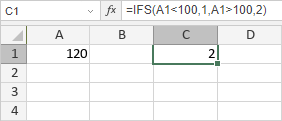

IFS Funkcija
Funkcija IFS je jedna od logičkih funkcija. Proverava da li je jedan ili više uslova ispunjeno i vraća vrednost koja odgovara prvom istinitom uslovu.
Sinaksa
IFS(logical_test1, value_if_true1, [logical_test2, value_if_true2], ...)
Funkcija IFS ima sledeće argumente:
| Argument | Opis |
|---|---|
| logical_test1 | Prvi uslov koji se proverava da li je TRUE ili FALSE. |
| value_if_true1 | Vrednost koja se vraća ako je logical_test1 TRUE. |
| logical_test2, value_if_true2, ... | Dodatni uslovi i vrednosti koje se vraćaju. Ovi argumenti su opcioni. Možete proveriti do 127 uslova. |
Napomene
Kako primeniti funkciju IFS.
Primeri
Postoje sledeći argumenti: logical_test1 = A1<100, value_if_true1 = 1, logical_test2 = A1>100, value_if_true2 = 2, gde je A1 = 120. Drugi logički izraz je TRUE. Funkcija vraća 2.
